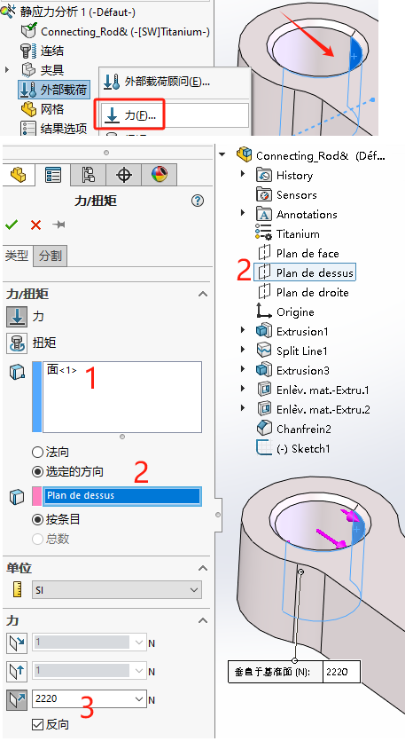

Simulation-3点弯曲测试
在此设置中，创建两个矩形体作为支撑，夹具应用于其底面，并在杆顶部的中心施加单个点载荷，如图

总结
使用对称模型/夹具或稳定顶点夹具稳定模型的影响可以使 SOLIDWORKS Simulation 获得更可靠的结果。
打开插件

新建算例
在运行第一个初始静态模拟之后，您可以启动趋势跟踪器，并将初始分析作为基线设计，以比较后续的设计更改。
材料
【材料】材料:合金钢

连结
在杆和两个支撑之间施加“无穿透”接触，使得力将杆推入支撑并弯曲。已知结果是对称的，但此初始设置的结果表明，杆件会奇怪地偏转，就好像除了弯曲之外还在旋转。
夹具
因为曲柄固定环处会产生旋转运动，所以在此圆柱面上作“固定铰链”约束。

在螺丝固定位置，我们选择“固定几何体”

外部载荷
在有限元分析中，要确保静态分析，除了载荷静态之外，有一个非常重要的因素:整个结构所有的部件都必须保证静态，不能存在可能发生的运动趋势。
网格
默认网格

应用网格控制
运行

应力

位移

应变

安全系数

检查最危险（最小）位置

选项 1：利用对称来稳定模型
正是出于这个原因，应该强制稳定这个模型以产生对称的结果。在此过程中，必须考虑确保对模型的调整不会导致程序给出无效结果。
在模型本身和载荷对称的情况下，应在仿真中使用对称性。SOLIDWORKS Simulation 中的对称夹具是相对不可回避的约束，可防止应力奇异性的生成，同时还可以稳定模型中的 1 个平移自由度和 2 个旋转自由度。
图 3 显示了沿长对称平面一分为二的模型。将模型切成两半产生的平面会应用一个 “对称” 类型的夹具（位于 “高级夹具 ”下）。

鉴于这是一个半模型，因此需要将施加到模型的力设置为其值的一半，以便与完整模型类似。不过，对于压力负载，这不需要考虑。通过使用四分之一对称模型，可以更进一步地实现这种对称设置，如图 5 所示。

四分之一模型产生的结果与半模型相同，优点是使用更少的网格单元和更快的求解时间，或者具有更密集的网格通常可以产生更好的结果。
选项 2：稳定整个模型
在许多情况下，由于模型不对称，因此无法使用对称性。因此，需要利用其他夹具技术来稳定整个模型并产生有效的结果。在下一个示例中，被弯曲的物体不是均匀的棒材，而是在一侧放置不对称灯泡的棒材，如图 7 所示。

同样，这个完整的模型在不稳定时也会受到旋转的影响，如图 8 所示。
补救措施是在模型上对结果影响最小的位置创建夹具。这导致夹具被放置在伪对称的可能位置（理论上应该在模型上的给定方向上位移最小的位置）。
对于此模型，在模型上放置了一条分割线曲线，以在这些位置生成顶点，以便与自定义的“使用参考几何”夹具一起使用。这些夹具的定义是为了防止伪对称顶点上的移动，以防止模型在支撑块上滑动/滚动，如图 9 所示。